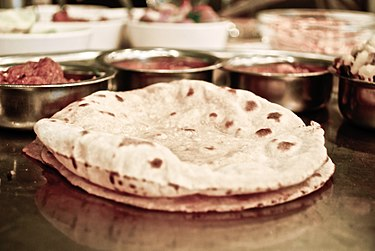
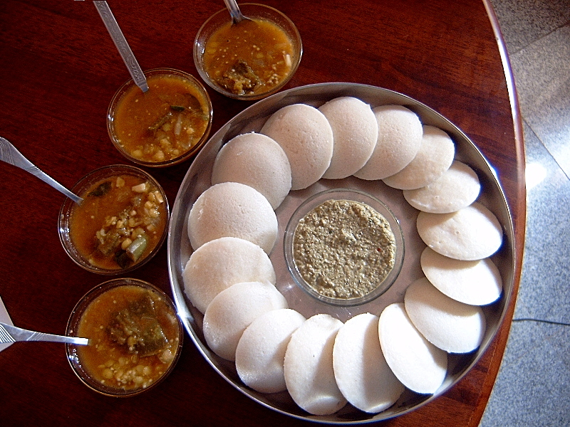

FOOD WEB APP

Food is any substance consumed by an organism for nutritional support. Food is usually of plant, animal, or fungal origin, and contains essential nutrients, such as carbohydrates, fats, proteins, vitamins, or minerals. The substance is ingested by an organism and assimilated by the organism's cells to provide energy, maintain life, or stimulate growth. Different species of animals have different feeding behaviours that satisfy the needs of their metabolisms that have evolved to fill a specific ecological niche within specific geographical contexts.
CHICKEN BIRIYANI

It is a mixed rice dish originating among the Muslims of the Indian subcontinent. It is made with Indian spices, rice, and usually some type of meat (chicken, beef, goat, lamb, prawn, and fish), or in some cases without any meat, and sometimes, in addition, eggs and potatoes
CAHPATHI

Chapati (alternatively spelled chapatti, chappati, chapathi, or chappathi; pronounced as IAST: capātī, capāṭī, cāpāṭi), also known as roti, rooti, rotli, rotta, safati, shabaati, phulka, (in East Africa) chapo, (in Marathi) poli, and (in the Maldives) roshi,[1] is an unleavened flatbread originating from the Indian subcontinent and staple in India, Nepal, Bangladesh, Pakistan, Sri Lanka, East Africa, Arabian Peninsula and the Caribbean.[2] Chapatis are made of whole-wheat flour known as atta, mixed into dough with water, oil (optional), salt (optional) in a mixing utensil called a parat, and are cooked on a tava (flat skillet)
IDLY

idly is a type of savoury rice cake, originating from South India, popular as a breakfast food in Southern India and in Sri Lanka. The cakes are made by steaming a batter consisting of fermented black lentils (de-husked) and rice. The fermentation process breaks down the starches so that they are more readily metabolised by the body.
Idli has several variations, including rava idli, which is made from semolina. Regional variants include sanna of Konkan
PASTHA
Pasta (US: /ˈpɑːstə/, UK: /ˈpæstə/; Italian pronunciation: [ˈpasta]) is a type of food typically made from an unleavened dough of wheat flour mixed with water or eggs, and formed into sheets or other shapes, then cooked by boiling or baking. Rice flour, or legumes such as beans or lentils, are sometimes used in place of wheat flour to yield a different taste and texture, or as a gluten-free alternative. Pasta is a staple food of Italian cuisine